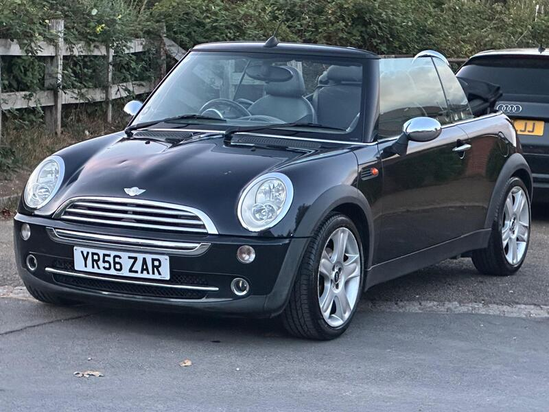
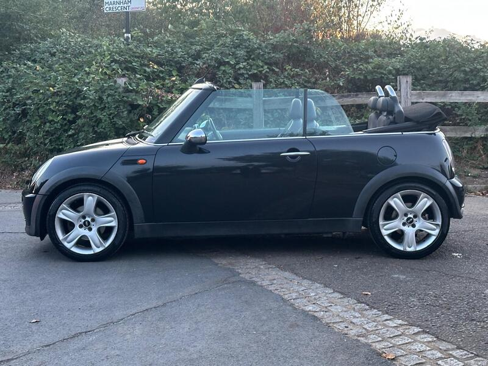
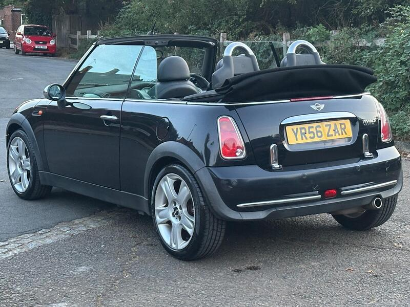
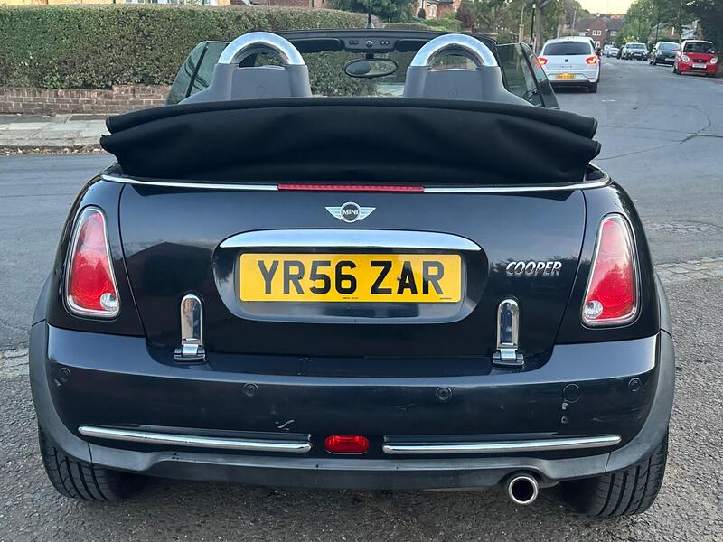

← All 50Ranked #6 of 50




Seller photos from the AutoTrader ad.
✓ Checked 13 Oct
2006 · MINI Convertible
MINI Convertible 1.6 Cooper
The lowest-mileage Mini here.
£2,50046,000 miles · Greenford · 27 mi from GU7
View on AutoTrader ↗Key facts
| Price | £2,500 |
|---|---|
| Year | 2006 |
| Miles | 46,000 |
| Model | MINI Convertible 1.6 Cooper |
| Colour | Black |
| Registration | 2006 (56 reg) |
| Owners | 3 owners |
| Service history | Not stated |
| MOT | 12 months (ad) |
| Seller | Trade |
| Location | Greenford |
| From GU7 | 27 mi (AutoTrader) |
| Checked | 13 Oct 2026 |
Why buy it
- Only 46k miles, full service history, 3 owners (ad)
- HPI clear
Things to check
2006 R52: avoid the CVT automatic (this one is manual)
- MINI Convertible R52/R57 weak spots
Not flagged as a major issue in our sources; check for water ingress via roof drains and seals. R52 CVT auto fails (avoid); supercharged R52 power-steering pump; pre-Nov 2011 Prince timing-chain tensioners; roof hydraulics £395–495 average repair, R57 roof from ~£1,735.
Seller says (extract)
“Mini Convertible 1.6 Petrol 2006 (56) Manual 46,000 Miles With Full Service History! HPI Clear! 2 Keys! 3 Owners From New! ULEZ Compliant! Years MOT To Go With The Car! Half Leather Interior Rear Parking Sensors Factory Fitted Multimedia Electric Windows And Electric Mirrors…”